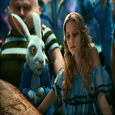

본문콘텐츠영역
Story
Alice, who does something else while listening to her sister's history story, is an imaginative girl. Alice imagines a world where animals and plants such as cats and flowers speak human words and books only have pictures instead of letters. Alice daydreams, saying that her world must be a strange country, and at that moment she sees a white rabbit running away.
Alice, who was about to enter the rabbit hole where the rabbit disappeared, suddenly falls into the hole, but Alice's skirt swells up due to the wind and acts as a blue parachute, and thanks to her skirt, Alice slowly goes down. And after a long time, they chase the rabbit again.
The rabbit door was opened in layers, and when he entered, he found a very small door. I thought the door handle would say something, but when Alice tried to pass, she told me to take medicine on the table, saying it was too big.
cast
-
Dormouse. Member for Mad Tea Party.
Even though he sleeps like Domus, he often wakes up and continues to engage in conversations.
-
Queen White
He memorizes three-letter words because he is clumsy and can't dress himself, can't do many things at once, and has a bad memory.
-
Disney animation Alice in Wonderland.
A character based on Alice Pleasures. She has an older sister and is somehow smart, imaginative and feisty.
-
March Hare
Member for Mad Tea Party, with straw stuck in his head, which is a sign that this bunny is crazy.
-
Mad Hatter
AWhen I first met Alice, she was drinking tea endlessly at a Mad Tea Party, which was always fixed at 6 p.m. with Hair and Domaus.
-
White Rabbit
It is painted as a rabbit in a suit holding a watch. Wear glasses often.
-
Queen Heart
Motivation is the Heart Queen card of Trump's card, which calls for the death penalty for no particular reason.
-
Cheshire cat
A strange creature that smiles its mouth off every time it appears.The lines are all puzzled.
Trailer
A pink-eyed white rabbit ran past Alice. There was nothing special about the scene. Even the rabbit was like, "Oh, my God! Oh, my God! It's going to be too late!" Alice thought so, even when she heard herself say it to herself.
Seeing the rabbit take the watch out of her pocket and rush her steps, Alice became curious and chased the rabbit across the field.Alice was running after the rabbit into the cave. I didn't even think about how to get out again.
The members are a hatter (Mad Hatter), March rabbit (like hair), and mountain mouse (domouse) and March rabbit's house. Due to the circumstances of the hatter, this place is always fixed at 6 p.m., or tea drinking time, so the three of us eat tea and snacks every day without much work.
Since it's "always" tea time, there's not even time to wash the dishes, so all the tools needed for the tea party are wrapped around a large table. So after you finish drinking tea, you move one seat at a time and continue to drink tea.
Gallery
-

- 
-
The strange country that has entered again is not the strange country it has experienced before.
View more